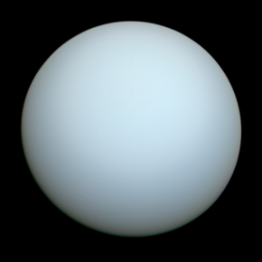
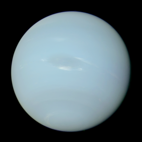

| Uranus | Jupiter | Saturn | Neptune | |
|---|---|---|---|---|
| Images Of Planets |  | |
|
 |
| Distance from Sun (106 km) | 2867.0 | 778.5 | 1432.0 | 4515.0 |
| Gravity (m/s2) | 8.7 | 23.1 | 9.0 | 11.0 |
| Mass (1024kg) | 86.8 | 1898 | 568 | 102 |
| Density (kg/m3) | 1270 | 1326 | 687 | 1638 |
| Diameter (km) | 51,118 | 142,984 | 120,536 | 49,528 |
| Mean Temperature (C) | -195 | -110 | -140 | -200 |
| Rotation Period (hours) | -17.2 | 9.9 | 10.7 | 16.1 |